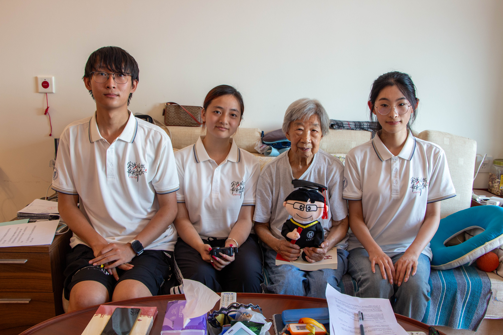
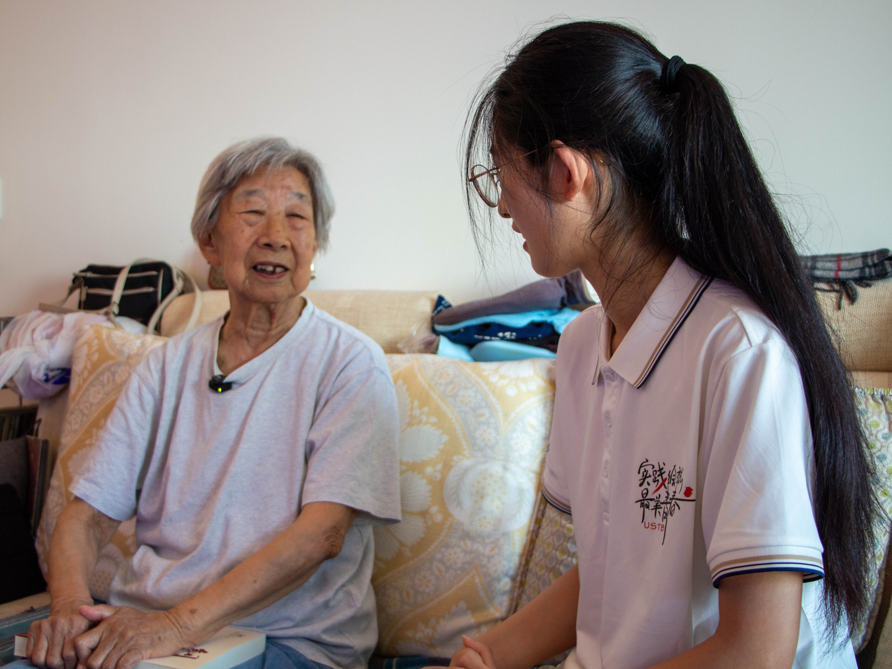
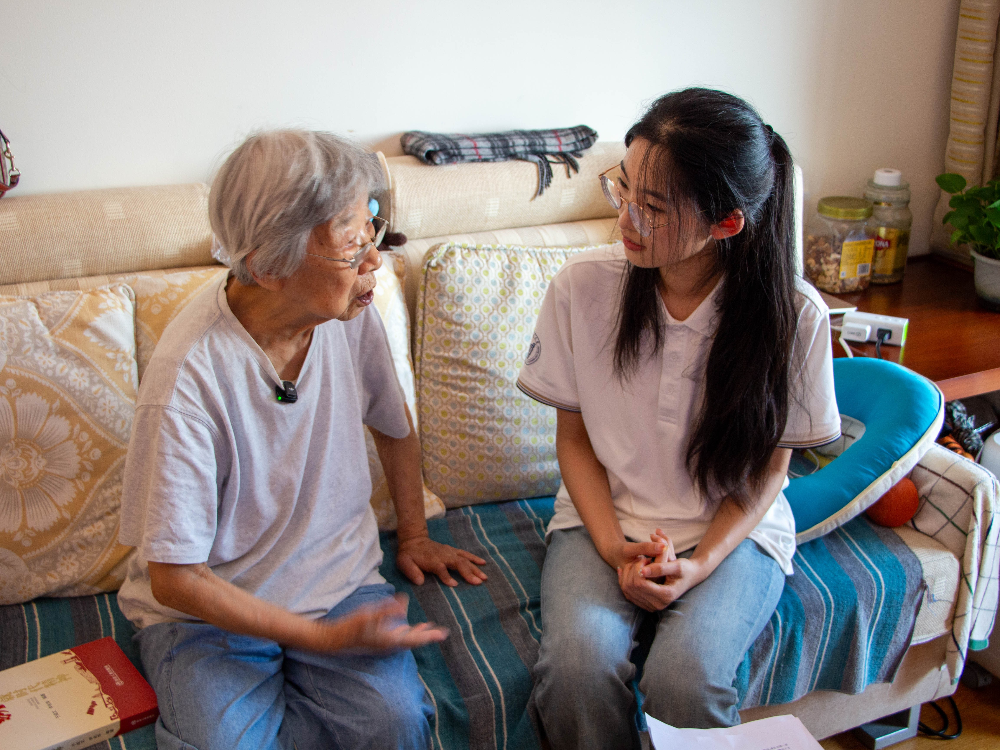

Q-01 · 口述访谈
口述
问 · 队员学校初期的校园环境是什么样的？
我们是钢铁学院的第一届招生，刚开始上学时，主楼、教学楼、绿化楼一概都没有。上课就在泥房子里头，没有桌子，只有椅子，老师讲台也很简单，站在上头讲，我们挨着坐。一年级下半年才开始先有理化楼，再有教学楼，那时候才进教室里头上课。
龚明英
受访人 · 口述
USTB-1957 北京钢铁学院 1957 届 · 冶金系 · 钢铁研究院高级工程师
要强国，一定就要有钢铁，没有钢铁就不行。 —— 龚明英



我们是钢铁学院的第一届招生，刚开始上学时，主楼、教学楼、绿化楼一概都没有。上课就在泥房子里头，没有桌子，只有椅子，老师讲台也很简单，站在上头讲，我们挨着坐。一年级下半年才开始先有理化楼，再有教学楼，那时候才进教室里头上课。
很多，专业老师、同学印象都很深刻。魏寿昆老师和他的夫人魏师母特别爱跳舞。那时候饭厅还没造好，叫“走廊舞会”——每个宿舍门口放一支蜡烛，就在走廊里跳舞。后来有了饭厅，礼拜六吃完晚饭，同学们把桌子搬到边上，饭厅里开舞会，魏先生经常去，经常跳到最后。
梅兰芳先生给我们表演过，快毕业的时候（五六年、五七年吧），梅兰芳到学校演出，侯宝林也来演出过，国家艺术团也到学校来演出。那时候钢铁学院体育活动比较多，“钢老三”就是清华、北大下一个就是钢铁学院，我们在的时候就是这样。
对，钢铁研究院，那时候叫钢铁试验所，后来改成钢铁研究院。
对，我选报钢铁学院，就是觉得要强国，一定就要有钢铁，没有钢铁就不行，又是重工业，工业里头重中之重。建国初期，鞍钢刚在修建，一天到晚报纸上都是鞍钢的消息，觉得很了不起，所以选了钢铁学院。
分到钢铁研究院，就是把工作做好。既然在这儿工作了，把工作做好就可以了，别的没有什么伟大目标，一天就是过日子。
我不知道现在总结出来的“三改三结合”，那时候没意识到。就是不仅要在学校里学习知识，还要参加生产劳动，和实践结合在一起。学校都有课程，有认识实习、生产实习、毕业实习，四年里头三次。
没什么大事儿，小事儿很多也记不住了。我觉得一点，同学之间到现在还有联系，只要还在的同学还是有联系。在学校的时候，大家互相之间特别没有杂念，现在同学里有院士有部长，但同学在一起，大家还是一样的，没有摆架子、高高在上的。同学们之间特别好。
钢铁研究院原来有炼铁研究室，我原来在炼铁研究室。后来 58 年钢铁研究院要发展，成立了好多其他研究室，我就从炼铁研究室出来，最后退休是在钢铁研究院的难熔金属研究室，已经不搞钢铁了。
学校任教就是讲课，我没听过他讲课，因为我们都毕业了。80 年代学校条件还是很艰苦的，他们出去带学生实习，学生自己带行李，老师也自己带行李，出去实习补助每天一毛五分钱。工作条件、生活条件就是这样。
祝他们好好学习，天天向上。